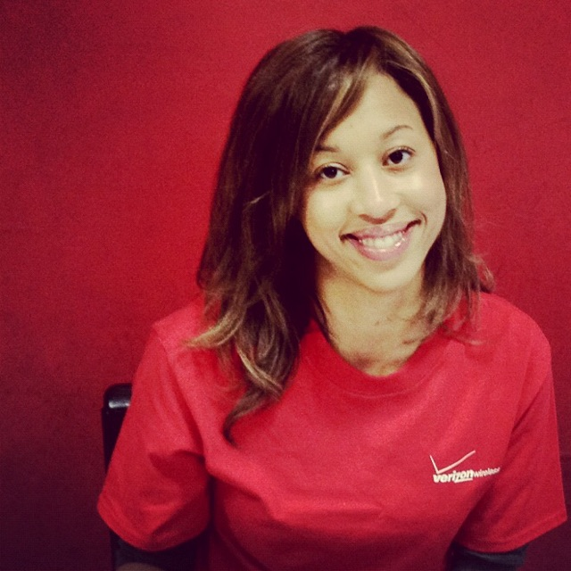

Margo Yearwood
About Me

I’m a Project Management / CS Operations professional with 14+ years of diverse experience in telecommunications. I have successfully implemented and managed large-scale Go-to-Market, PMO & Process projects; both technical and non-technical I would like the occasion to put my leadership, project management, go-to-market and process skills to work.
Scholastically, I hold Master of Science degree in Management Information Systems/CIS in addition to a PMP and ScrumMaster certification. I have also attended various workshops, classes and seminars in pursuit of continued professional growth. In previous and current positions held, I routinely have had to utilize various problem-solving, analytic, negotiation and solid communication skills to meet performance goals; all within the context of meeting milestones, deadlines and QA standards. I have the right mix of leadership, passion, experience and knowledge to make a great impact.
Connect with Me